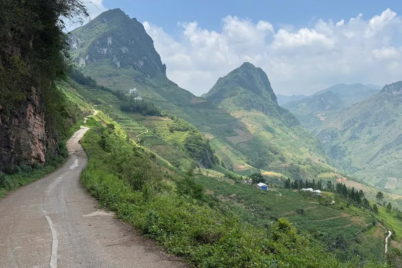
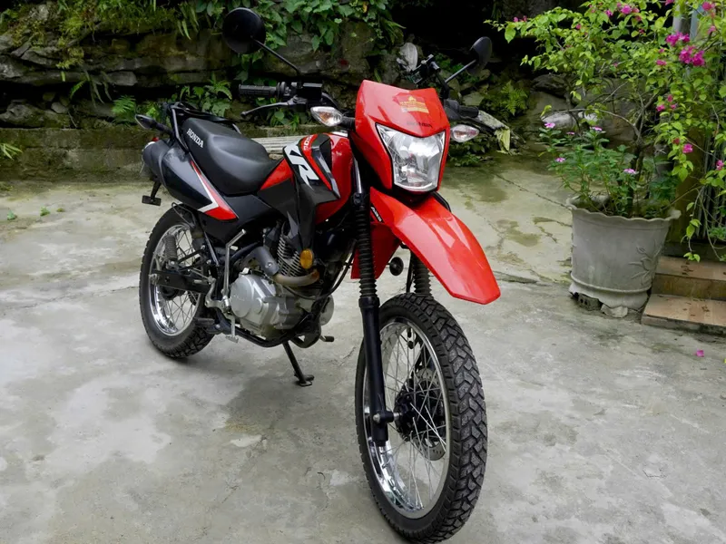
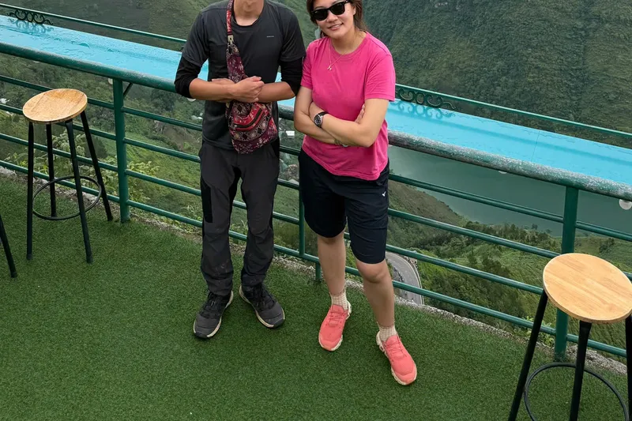
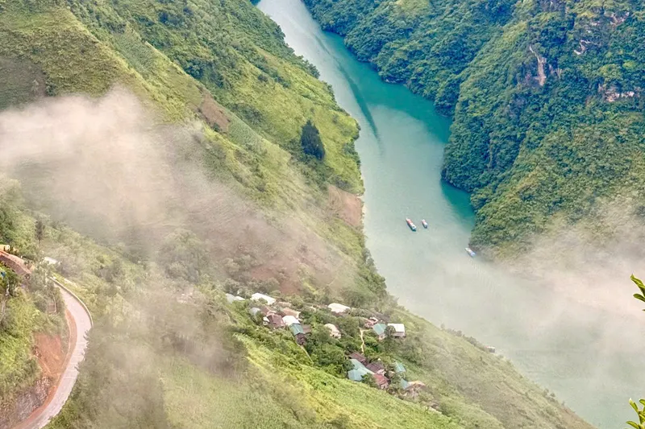
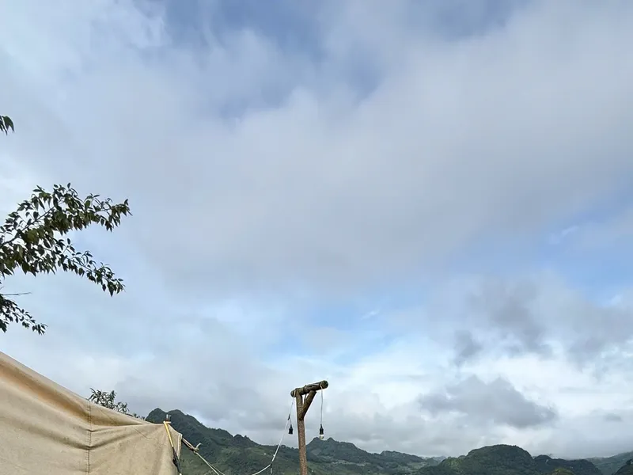
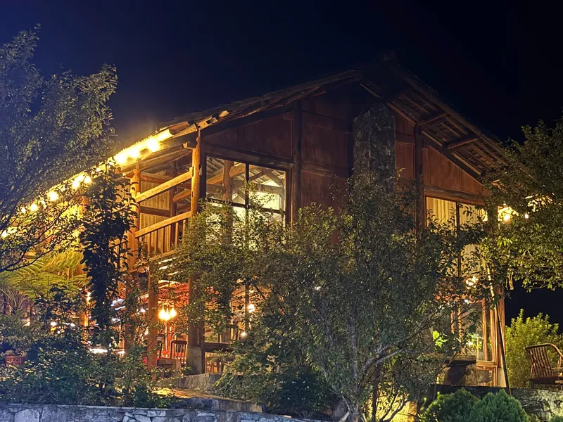

Straight answers
Blog
Everything I would tell you myself, in writing — safety, cost, timing, self-drive versus guided, market days, and how to actually get here.
-

Plan your trip
The Ha Giang Loop, explained properly
What the loop actually is, how many days you need, and whether you need a guide at all.
-

Safety
Is the Ha Giang Loop safe?
What actually causes accidents here, and what I do differently on a guided trip.
-
Plan your trip
The best time to visit Ha Giang
The real seasonal pattern, month by month — and when I will tell you not to come.
-

Plan your trip
What the Ha Giang Loop actually costs
Guided prices, self-drive daily budget, and the costs first-timers forget.
-

Safety
The Ha Giang Loop, travelling alone as a woman
A straight answer, not a reassurance — what I actually do differently.
-

Plan your trip
Easy rider or self-drive: which is right for you?
Cost, skill, licence requirements — a straight comparison, no wrong answer.
-

Plan your trip
Ha Giang market days, explained properly
The fixed weekly markets, and the eight rotating "cho lui" markets that follow the old zodiac cycle.
-

Plan your trip
Getting from Hanoi to Ha Giang
The overnight sleeper bus, real operators, and what it actually costs.
-

Plan your trip
Ha Giang or Sapa? An honest answer
I have never guided in Sapa, so here is an honest answer instead of a comparison I cannot really make.
-

Places
Ma Pi Leng, the pass everyone photographs
What the pass actually is, how to see it properly, and the night I got lost on it.
-

Places
Dong Van, the town the loop is built around
The real landmarks nearby, the rotating markets, and where to actually stay.
-

Places
Meo Vac, at the other end of the pass
What it actually is, and the quiet road beyond it few tourists see.
-

Places
Du Gia, the village at the end of the road
The waterfall, the homestays, and why it's built as a rest day on purpose.
-

Places
Quan Ba, the gateway into the mountains
Heaven Gate, the Twin Mountains view, and the forest trek above it.
-

Places
Lung Cu, the flag at the edge of the country
The northernmost point of Vietnam, and where it fits on the loop.